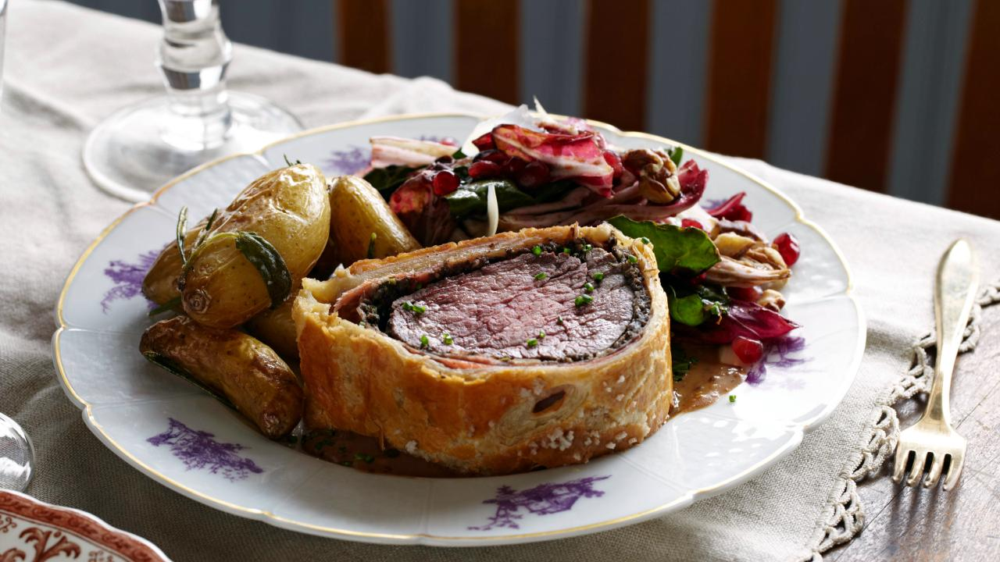

Best Beef Wellington

Description
Time for the ultimate test! This dish in particular, is famed to be one of the most difficult and obnoxious dishes to make in all culinary circles. The sheer amount of preparation and nuance required makes most chef's throw their hands up in distress and inevitably give up. But that stops today!
We spent several moths curating this recipe, to be the most cohesive and easy to follow recipe on the internet, so that even the most unseasoned chefs can replicate it with ease. If it doesnt come out as pretty as you thought, thats okay! Preparing this dish is known to be diffcult. You might not get it right the first time and that's okay. Learning is hard easy and cooking is harder, but we're going to try to make this as easy as possible so you too, can enjoy the "Best Beef Wellington."
Ingredients
For the Duxelles:
- 3 pints (1 1/2 pounds) white button mushrooms
- 2 shallots, peeled and roughly chopped
- 4 cloves garlic, peeled and roughly chopped
- 2 sprigs fresh thyme, leaves only
- 2 tablespoons unsalted butter
- 2 tablespoons extra-virgin olive oil
- Kosher salt and freshly ground black pepper
For the Beef:
- One 3-pound center cut beef tenderloin (filet mignon), trimmed
- Extra-virgin olive oil
- Kosher salt and freshly ground black pepper
- 12 thin slices prosciutto
- 6 sprigs of fresh thyme, leaves only
- 2 tablespoons Dijon mustard
- Flour, for rolling out puff pastry
- 1 pound puff pastry, thawed if using frozen
- 2 large eggs, lightly beaten
- 1/2 teaspoon coarse sea salt
- Minced chives, for garnish
- Green Peppercorn Sauce, recipe follows
- Roasted Fingerling Potatoes with Fresh Herbs and Garlic, recipe follows
- Warm Wilted Winter Greens, recipe follows
Green Peppercorn Sauce:
- 2 tablespoons olive oil
- 2 shallots, sliced
- 2 cloves garlic, peeled and smashed
- 3 sprigs fresh thyme, leaves only
- 1 cup brandy
- 1 box beef stock
- 2 cups cream
- 2 tablespoons grainy mustard
- 1/2 cup green peppercorns in brine, drained, brine reserved
Roasted Fingerling Potatoes with Fresh Herbs and Garlic:
- 2 pints fingerling potatoes
- 2 sprigs fresh rosemary
- 2 to 3 sprigs fresh sage
- 3 sprigs fresh thyme
- 6 cloves garlic, left unpeeled
- 3 tablespoons extra-virgin olive oil, plus for sheet pan
- Salt and pepper
Warm Wilted Winter Greens:
- 1/4 cup honey
- 1/2 cup balsamic vinegar
- 1/2 pint walnuts, for garnish
- 3 bunches assorted winter greens (such as Swiss chard, radicchio, or escarole), washed, stemmed, and torn into pieces
- 1 tablespoon grainy mustard
- Extra-virgin olive oil
- 1/2 cup pomegranate seeds, for garnish
- Parmesan shavings, for garnish
- 1 shallot, chopped, for garnish
Steps
For the Duxelles:
- To make the Duxelles:
Add mushrooms, shallots, garlic, and thyme to a food processor and pulse until finely chopped. Add butter and olive oil to a large saute pan and set over medium heat. Add the shallot and mushroom mixture and saute for 8 to 10 minutes until most of the liquid has evaporated. Season with salt and pepper and set aside to cool.
Recipe Source
Food Network - The Ultimate Beef Wellington